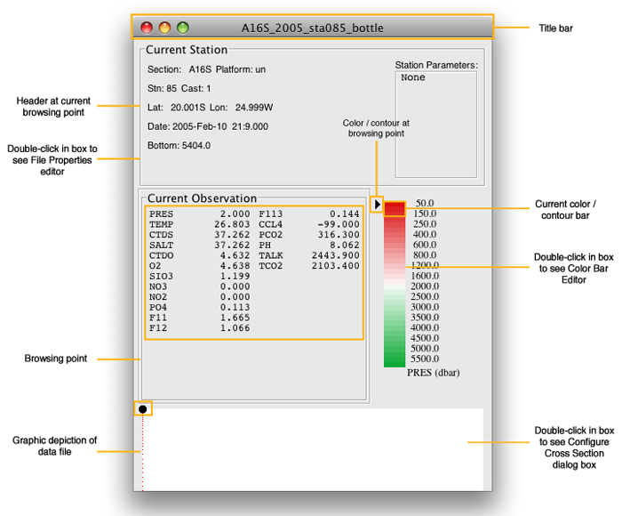

Oceanographic profile data are data collected at one location - one geographic coordinate - in the vertical, typically from the sea surface to some subsurface depth, in some cases to just above the ocean bottom.
Profiles are often collected from a ship which stopped at that location to collect the profile. Those stops are called stations, and so the word station is sometimes used instead of profile, although it is not necessary to make a station stop to obtain a profile: for example eXpendable BathyThermograph - ‘XBT’ - temperature vs. depth profiles are often collected from moving ships, or even from airplanes and submarines.
Two principal types of profile data from oceanographic stations are bottle data and CTD data.
Many seawater characteristics cannot be sampled, or sampled at high enough quality, by electronic sensors.
Bottle data originate from water sample bottles attached to a lowered wire or group-mounted on a frame (called a “rosette” water sampler) attached to a lowered wire, which are closed at chosen levels, isolating water samples then subsampled shipboard for various parameters such as salinity, dissolved oxygen (or other dissolved gasses), dissolved inorganic nutrients, or many other substances.
From one water bottle brought up from the deep, subsamples can be drawn for many different seawater characteristics.
Physical oceanographers have found that it is useful to obtain water samples for determination of dissolved oxygen concentration and the concentrations of the inorganic ‘nutrients’ nitrate (NO3), phosphate (PO4), and silicate (SiO3). Beginning primarily in the 1970s global measurements of other natural and anthropogenic dissolved substances began to be feasible and useful, for example components of the CO2 system, radiocarbon, helium, tritium, and, beginning in the 1980s, CFCs.
CTD data originate from semi-continuous sampling electronic profilers, which are lowered into the ocean, recording output typically from pressure, conductivity, temperature sensors, and sometimes other sensors as well.
The sensors in a CTD provide measurements of conductivity, temperature, and pressure. The salinity profile from a CTD is calculated from C, T, and P by a computer. A non-ocean-experienced engineer might call the instrument a ‘CTP’ for what it measures, or an ‘STP’ for the parameters in its processed data stream, but oceanographers use the traditional designation ‘CTD’.
For convenience, oceanographers sometimes (in informal non-research publications) interchange the words ‘depth’ and ‘pressure’ due to the similarity of depth expressed in meters and pressure expressed in decibars.
Oceanographers rarely use conductivity data themselves in ocean water mass and circulation studies because the vertical variation of conductivity is a strong function of temperature and pressure. By using the calculated property ‘salinity’ the oceanographer has a valuable parameter whose values are essentially independent of pressure and temperature.
Most modern bottle data include data parameters from the CTD sensors recorded at the time the bottle was closed. An oceanographic section is composed of a series of profiles/stations across an oceanographic region or feature. Oceanographers most often use sections from single ship transects, called quasi-synoptic sections, but useful sections may also be pieced together from various data.
Learn More
Optimal Data for Use with Java Ocean Atlas
Java OceanAtlas is optimized for working with ocean section data because (1) sections provide an oceanographically useful way of visualizing ocean features and (2) there are many section data. Also, for ocean profile data it is easier to make visually-appealing plots from ocean sections (X & Z axes) than it is from mapped station data (X & Y axes). The reasoning behind this point can be understood by considering that to study the water properties and circulation of typical deep ocean regions requires that station (profile) separation be no more than ca. 50 km in the interior of the region and ca. 8-12 km across boundary currents at the edges. Thus, while one basin-spanning section could be used to examine circulation and fluxes across the X-Z plane, to map the X-Y patterns of flow at that resolution would require many sections, spaced no more than 50 km apart. The realities of shipborne logistics make this impossible for large regions. Of course satellite data can provide superb maps but are restricted to a very few parameters at the sea surface.
While it is difficult to make persuasive, appealing, yet accurate, computer-contoured maps from miscellaneous profile data, such as from a typical collection of stations and sections, it is possible to make good-quality maps from pre-gridded data. These can be made from X-Y-Z gridded compilations of oceanographic data or output from computer models of the ocean (which are typically received as gridded data). In these DPO JOA Examples we will use pre-gridded statistical compilations of data from the World Ocean Atlas 2005 (from Syd Levitus and colleagues at the US National Oceanic and Atmospheric Administration’s National Oceanographic Data Center.
The Origin of the A16_2005_sta085_bottle.joa data file
During the World Ocean Circulation Experiment (WOCE) in the 1990s, a comprehensive One-Time global survey was made of a broad suite of water properties along a planned set of oceanographic transects.
A subset of these transects was subsequently chosen by oceanographers to be re-occupied (re-measured) approximately decadally (some more often, some less often).
One of these transects we will use in the DPO JOA Examples is the “A16” meridional (south-to-north; as opposed to zonal, or west-to-east) Atlantic Ocean transect from the Southern Ocean, near the South Shetland Islands, north to Iceland. This original WOCE transect was re-occupied during two cruises: the northern part in 2003 and the southern part in 2005, as part of the US Global Ocean Carbon and Repeat Hydrography program.
In this chapter we will use bottle data from one station from the 2005 South Atlantic Ocean “A16S” cruise to investigate the properties of seawater and their vertical variation at the location of this station.
Files that may be needed or created in this example:
A16S_2005_sta085_bottle.joa
Exercise 3A-01: Seawater Properties - The JOA Data Window¶
Start JOA
File → Open…
Locate the data file A16S_2005_sta085_bottle.joa and Open. The JOA Data window should look like this:

FIG 3a-01 Java OceanAtlas Data Window with descriptions¶
Here is a summary of the various parameters in this data file (all parameters not explicitly described because CTD parameters are from analyses of water samples drawn from the water bottle after the sampler was brought on board after the cast):
PRES
CTD pressure at the time the bottle was closed
TEMP
CTD temperature (“in situ”) at the time the bottle was closed
CTDS
CTD salinity at the time the bottle was closed
SALT
bottle salinity
CTDO
CTD dissolved oxygen at the time the bottle was closed